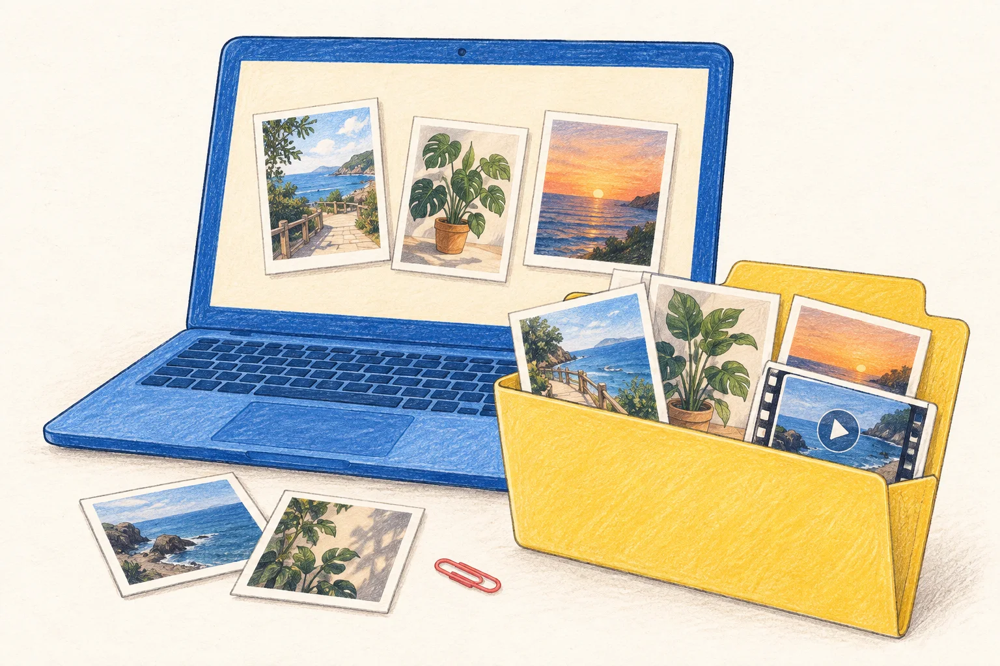

APPLE SILICON
Mac Apple 芯片
适合 M 系列芯片的 Mac。
macOS 13 或更新版本 · arm64
下载 Mac 版Brclio 小红书下载器 · 电脑与安卓
把一篇笔记的图片、视频和文案收进本地，
需要整理整个主页时，也有桌面版陪你。
macOS / Windows / Android · 安装后即可使用

发布于 2026.10.09
请选择与你设备相符的版本：Mac、Windows 或下方 Android 安卓版。
适合 M 系列芯片的 Mac。
macOS 13 或更新版本 · arm64
下载 Mac 版适合搭载 Intel 处理器的 Mac。
macOS 13 或更新版本 · x64
下载 Intel 版安装后，从桌面快捷方式开始。
Windows 10 / 11 · x64
下载 Windows 版不确定 Mac 芯片？点左上角 →「关于本机」。
Windows 便携版 146.3 MB单篇原图、实况与播放视频免费。无水印原视频需要有效软件会员；桌面主页批量下载还需要已授权设备。软件会员与 99.99 元 VIP 付费交流群分别办理。了解账号与会员 ↗
安装包来自 GitHub Releases。查看最新发布 ↗
在手机上，保存完整的一篇笔记。
原图与多图 · 视频清晰度选择 · 实况 JPG＋MP4 · 文案与 ZIP
支持复制图片，以及从小红书通过系统分享直接接收链接。
Android 8.0 或更新版本 · 普通素材免费下载
安卓当前提供单篇功能；单独普通视频与实况 MP4 持续写入本地，不设固定文件大小上限。图片、预览与 ZIP 保留原有保护；会员无水印原视频通过浏览器登录后下载，主页批量下载请使用桌面版。
安卓安装包与校验文件由官方 GitHub Releases 提供。
文件整理示意 · 具体媒体以原笔记为准
按序号和标题归档，媒体与文案放在一起。
自定义采集间隔，暂停后继续，失败项单独重试。
保存到指定目录，继续与重试不打乱已有序号。
Mac 打开 DMG，将应用拖入「应用程序」。Windows 运行安装包，按提示完成安装。
单篇笔记直接解析。主页批量请先开通会员，并在软件独立窗口登录小红书。
主页任务可设置保存目录和采集间隔。暂停或关闭后，下次打开可手动继续。
运行环境已内置，不需要另装 Python、Node.js 或 Chrome。遇到安装提示？查看帮助 ↗
偶尔保存一篇笔记，用网页版就可以。安卓手机可以安装客户端，接收分享链接，保存单篇笔记的原图、视频、实况素材、文案或 ZIP。需要采集作者主页、指定本地文件夹、设置间隔和保留任务进度时，选择 Mac 或 Windows 桌面版。
Mac / Windows 的视频直接保存、Android 的单独普通视频与实况 MP4 不设固定文件大小上限，实际仍取决于磁盘空间与网络；网页视频、ZIP 归档与 Android 预览继续保留保护。桌面版还可将多张独立原图一次复制到系统剪贴板；安卓版支持图片复制和系统分享，具体粘贴效果取决于接收应用。网页端受浏览器剪贴板能力限制。
打开网页版 ↗单篇原图、实况与播放视频免费。无水印原视频需要有效软件会员，且笔记页面必须提供原视频；作者写入画面的水印可能仍保留。网页与桌面版可在「账号与会员」中用邮箱登录、开通或兑换会员，再点击「下载无水印视频」。Android 点击会员原视频入口后会打开浏览器并带入笔记链接，在网页中解析、登录软件账号后下载。
软件会员可选日付 3 元（1 天）、月付 19.9 元（30 天）或年付 69.9 元（365 天）。按次购买，不自动续费；会员时长从兑换成功起计算。
付款务必备注软件账号邮箱。付款后由人工核实，我们会在 24 小时内尽快处理并将激活码发送至该邮箱，请耐心等待。收到后回到「账号与会员」兑换开通，也请留意垃圾邮件。随着功能持续完善，会员价格将适时上调，具体以购买时页面展示为准。
桌面主页批量下载还需要已授权设备，以及在软件的独立小红书窗口登录；小红书账号与软件账号是两套登录。
软件会员与 99.99 元 VIP 付费交流群分别办理。软件会员不包含交流群；加入交流群也不会自动开通无水印原视频或主页批量下载权益。会员到期或退出软件账号，不会主动删除已下载文件和任务记录。
当前 Mac 版尚无 Apple Developer ID 签名及公证，Windows 版尚无发布者代码签名，首次打开可能出现系统提示。请确认安装包来自本页链接的官方 GitHub Releases，并先阅读发布说明中的安装步骤。
Mac 若出现钥匙串授权，它用于保护本机账号信息；拒绝后可在软件账号页重试安全存储。请勿删除账号或任务文件来处理授权问题。
旧版 Mac 若提示「无法确认应用处理器架构」，请退出旧版，下载上方对应芯片的新版 DMG，并在原位置覆盖应用一次。无需安装 Xcode，也无需删除账号、任务或已下载文件。
查看安装与发布说明 ↗新版客户端优先使用已开启的系统代理；未开启时，仅在检查更新和应用内下载安装包期间使用后台订阅，选择低延迟节点，完成、取消或失败后关闭内置代理。后台未设置或已停用时直接连接。
桌面版使用内置代理下载安装包时，遇到连接中断会自动重试并保留已有进度，「关于软件」和更新弹窗实时显示失败次数。连续失败 10 次后停止自动重试，点击「继续下载」或「重试下载」即可重新开始；暂停下载或关闭内置代理也会保留已下载的进度。安装包完整性或来源检查失败时仍需手动处理。
在「关于软件」或更新弹窗中可点击「关闭软件内置代理」。手动关闭设置会保留到重启后，后台自动检查不会重新开启；下次主动检查或下载更新时自动恢复，系统代理仍优先。关闭按钮不会关闭系统代理或外部代理软件。
可在桌面版「关于软件」里检查更新。安装失败时，可点击「手动下载安装包」，通过默认浏览器下载适合当前系统与芯片的最新正式版。浏览器下载使用浏览器自己的网络设置。旧版没有此按钮时，选择本页对应版本的完整安装包即可。
下载完成后先退出旧版，再在原位置覆盖安装：Mac 打开对应芯片的 DMG，将新版应用拖到原位置并选择替换；Windows 运行安装版，使用原安装位置。覆盖安装通常会保留账号、任务和已下载文件；请保留原数据目录及下载文件夹，不要先卸载或删除数据。更新后，未完成的任务需要手动继续。
Mac v1.8.3–v1.8.6 首次升级：请等待已有安装结束，完全退出旧版，用本页完整 DMG 覆盖原安装位置，再从「应用程序」手动打开新版。Windows 便携版更新会转为安装版，之后请从新版快捷方式启动。
选择对应系统与芯片的安装包 ↗下载笔记中的实况时，保存为 JPG + MP4 配对素材，不会自动合成为相册里的实况。需要制作 Live Photo，可在网页或桌面的「制作实况」选择本地图片、图片组或视频，制作 0.5–3 秒配对 HEIC + MOV，可选 JPEG + MOV；分别保存照片和动态视频，或下载完整 ZIP 后按说明导入「照片」。桌面视频素材不设固定文件大小上限，网页和图片素材仍有内存保护。打开实况制作 ↗
主页任务按发现顺序创建「序号－标题」文件夹，保存可用的媒体与笔记文案。
采集范围为当前登录账号可见、能打开详情的笔记。遇到登录、验证码或访问限制时，请按提示处理后继续；失败项可重试。请尊重创作者版权与平台规则。
安装包由 GitHub Releases 提供，网络暂不可达时可以稍后重试，或前往发布页下载。安卓手机请选 Android APK；iPhone 和 iPad 暂无客户端，可以使用网页版保存单篇笔记。Mac 和 Windows 安装包需要在对应电脑上运行。
前往 GitHub 下载 ↗使用安卓手机下载 APK，打开后按系统提示安装。如系统要求允许当前浏览器或「文件」应用安装未知来源应用，请先确认文件来自本页链接的官方 GitHub Releases，再按该应用的安装提示操作。
安装后粘贴笔记链接，或从小红书的系统分享菜单选择 Brclio。保存时选择文件位置，再到系统「文件」应用查看；处理期间请保持客户端打开。单独普通视频与实况 MP4 不设固定大小和总下载时长上限，无数据连接仍会超时，图片、预览与 ZIP 继续保留保护。实况保存为 JPG＋MP4 素材，不会自动合成为相册实况。
无水印原视频为软件会员权益：解析后点击会员原视频入口，在打开的浏览器中解析笔记、登录软件账号并下载，文件由浏览器保存。笔记页面未提供原视频时无法下载；作者写入画面的水印可能仍保留。
安卓客户端启动时会检查新版，也可在「软件更新」中手动检查。系统已开启代理或 VPN 时优先使用现有网络；否则仅在更新检查与安装包下载期间按后台订阅选择低延迟节点，完成、取消或失败后关闭内置代理。点击「关闭软件内置代理」后，关闭设置会保留到重启后，后台自动检查不会重新开启；下次主动检查或下载更新时自动恢复。浏览器下载使用浏览器自己的网络设置。
发现新版后，由你确认下载安装包；校验通过后，再点击安装并在系统安装器中确认。检查更新不会自动下载安装。安装失败或未完成时，可点击「浏览器下载最新版 APK」，也可从本页下载新版 APK，打开后按系统提示覆盖原正式版，不要先卸载旧版。
安卓与桌面版分别维护版本号；安卓当前不提供主页批量下载。
查看安卓发布说明 ↗